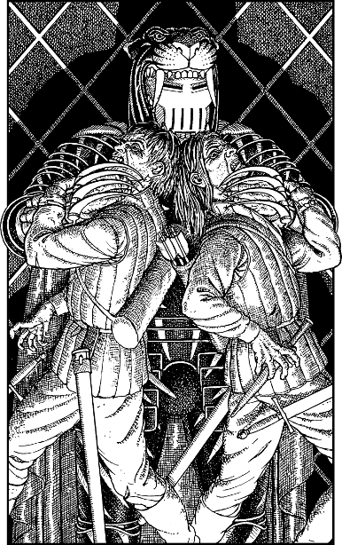

200
You see the fearsome figure of Autarch Sejanoz come stepping through the chamber’s shattered window. He alights from the platform of his golden sky-chariot which hovers silently beside the tower. Sheathed from neck to toe in black and golden armour, this warrior stands an arm’s length taller than you and your companions. A great tiger helm conceals his face and behind him swirls a voluminous scarlet cloak. Only his hands are visible and they seem strangely at odds with the grand scale and design of his armour. They are withered and twisted like claws, the skin wrinkled and cracked like burnt parchment. Hanging over them are four long, curved, needle-like claws of steel that sprout from the back of the golden bracers which encase his wrists.
Gildas and his men reach for their bows and fire repeatedly at the Autarch, yet every arrow they send against him ends shattered. From the visor of his helm there issues a thin, chilling laugh: ‘You cannot kill me with your sharpened sticks, you fools!’ Upon hearing this, Paviz and Yalin drop their bows and unsheathe their blades. Paviz shouts a much practiced cue, and together they attack the Autarch, striking simultaneously from either side.
With stunning swiftness, Sejanoz retaliates. He reaches out and grabs each man by the throat with his cadaverous hands, and raises them several inches from the floor. With a series of metallic clicks, the needle-claws extend and turn inwards, puncturing their jugular veins. Their faces blanch as their blood is drained, and not a drop is spilt.

You are shocked by the spectacle of the Autarch’s vampiric attack, and your senses scream at you to act to save your brave companions before it is too late.
If you possess Kai-alchemy and wish to use it, turn to 75.
If you possess Magi-magic and wish to use it, turn to 233.
If you possess Kai-surge and wish to use it, turn to 148.
If you possess none of these skills, or if you choose not to use any of them, turn to 24.